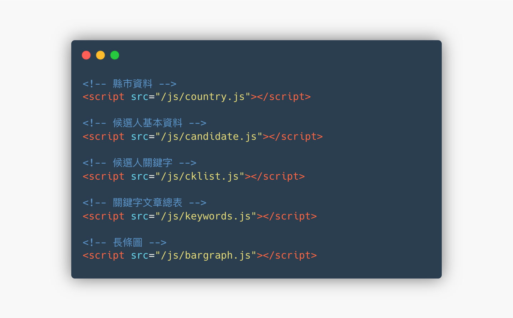

2020立委關鍵政策
年份
2019
介紹
互動 SVG，簡化圖表。縣市選單及立委相關資料使用 JSON 管理，並透過下拉式選單及 jQuery，實現篩選資料功能。
參與角色
- 前端切版、
- jQuery
其他參與角色
- 策展編輯、
- 數位視覺設計師
自動請纓
稱不上是前端的身份參與下，開始研究怎麼讀取肥大的資料又不影響載入及互動速度，並能正常切換資料。將原本一大包的資料拆分成較小的檔案，並利用候選人姓名 mapping，測試過程中發現有同名同姓的候選人造成資料錯誤 （業界俗成許淑華之亂），因此後期加上政黨一起比對，解決錯誤。

由於不支援 JSON，只好包裝成 JavaScript 資料引用
同場加映
2018 年九合一選舉議題視覺及整體網站
網站
https://web.cw.com.tw/election2018/
組成專案合作小組，主打互動地圖，參與網站規劃、視覺設計等。除了縣市首長外，本次選舉也得益於公投議題，獲得很大的關注。